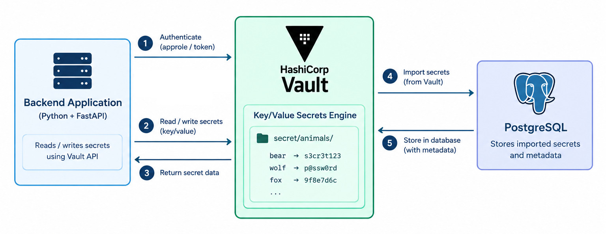
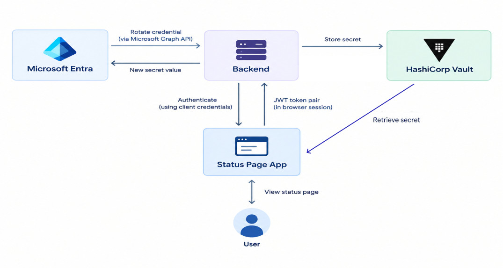

About
This project explores the backend architecture and integrations involved in securely managing secrets across different systems. The aim is to demonstrate how secrets can be generated, stored, retrieved and managed programmatically, while keeping the application layer separate from the underlying secrets management system.
The project currently demonstrates integrations with:
- HashiCorp Vault for secure secret storage and retrieval
- PostgreSQL for storing application and secret metadata
- Python for the backend services and integration logic
- SQLAlchemy for database interaction
- FastAPI for exposing the backend functionality through an API
- Microsoft Entra ID for managing identity and authentication
- GitHub for managing and rotating GitHub access tokens and secrets
The project provides a practical example of how a backend application can interact with a dedicated secrets management platform rather than treating secrets as ordinary application data.
HashiCorp Integration
First of all, I have set up an integration with Hashicorp as a proof of concept. These are the steps I took in order to create it.
- Set up HashiCorp Vault in development mode to provide a local secrets management environment.
- Created a collection of dummy secrets using an animal-themed dataset to provide realistic test data without using real credentials.
- Stored the generated secrets securely in HashiCorp Vault using its key-value secrets engine.
- Built an integration to retrieve secrets from Vault and import them into the application database along with the relevant metadata.
- Implemented a secret rotation mechanism that generates new secret values and updates the corresponding secrets in Vault.
- Created API endpoints for retrieving secrets and triggering secret rotation through the backend.
Architecture


Implementation
I set up HashiCorp Vault to run locally in development mode. This provided a local Vault instance that could be used to store and retrieve credentials while developing the application.
wget -O- [https://apt.releases.hashicorp.com/gpg](https://apt.releases.hashicorp.com/gpg) | \\
sudo gpg --dearmor -o /usr/share/keyrings/hashicorp-archive-keyring.gpg
echo "deb [arch=$(dpkg --print-architecture) signed-by=/usr/share/keyrings/hashicorp-archive-keyring.gpg] \
https://apt.releases.hashicorp.com $(grep -oP '(?<=UBUNTU_CODENAME=).*' /etc/os-release) main" | \
sudo tee /etc/apt/sources.list.d/hashicorp.list
sudo apt update
sudo apt install vault
vault server -dev
I then created methods for adding, updating and retrieving secrets from the Vault.
def add_or_update_secret_to_vault(path,id,username,password):
if not client.is_authenticated():
raise Exception("Vault authentication failed")
secret = client.secrets.kv.v2.create_or_update_secret(
path= f"{path}/{id}",
secret={
"username": username,
"password": password
}
)
print("SECRET", secret)
def get_vault_username_password(path):
secret = client.secrets.kv.v2.read_secret_version(
path=f"{path}"
)
username = secret["data"]["data"]["username"]
password = secret["data"]["data"]["password"]
return username, password
The first method checks that the Vault client is authenticated before creating or updating a secret. The secret is stored using the supplied path and ID, with the username and password stored as the secret data.
The second method retrieves a secret from Vault and returns the stored username and password.
Database Structure
I created a database model to store metadata about the secrets held in Vault. This allows the application to keep track of the secrets stored in Vault and provides the information required to facilitate credential rotation.
Because the secrets stored in Vault are volatile when running Vault in development mode, I also created a startup script that adds the required secrets back into Vault when the application starts.
Endpoints
/hashicorp/secrets
This endpoint retrieves all of the secrets stored in Vault.
In a real implementation, this endpoint would require authentication. For the purposes of this concept, it provides an endpoint that can be used to retrieve the values stored in Vault.
/hashicorp/secret/{secret_id}
This endpoint retrieves the secret data for a specific secret using its ID.
/hashicorp/rotate/{secret_id}
This endpoint rotates a set of credentials, writes the updated credentials to Vault, and then updates the corresponding information in the database.
Entra Integration

Now that HashiCorp Vault has been integrated, there is a mechanism for managing credential rotation. However, the credentials also need to be managed on a target application or platform.
For this example, I am using Microsoft Entra as the target platform. The backend rotates credentials in Entra by making a call to the Microsoft Graph API, retrieves the new secret value, and then writes it to HashiCorp Vault.
The backend stores metadata about the secret rather than the secret value itself.
To demonstrate this concept, I created a status page application. The status page retrieves the client secret from Vault and uses the retrieved credentials to authenticate with Entra. Once authentication is successful, the backend displays a status page.
This uses the client credentials authentication flow, with the application authenticating with Entra.
Entra Setup
I created the following app registrations.
Secrets Vault Integration
This app registration enables the backend to manage the client secrets for the target app registration, allowing it to change the secret value. It has the Application.ReadWrite.All permission to facilitate this.
Status Page API Access
This app registration exposes the API so that permissions can be configured to allow the status page application to authenticate.
Status Page Authentication
This app registration allows the status page to authenticate with the API using the credential retrieved from Vault.
Database Structure
I created the following model to store metadata about the client secrets in Entra.
class EntraCredential(Base):
__tablename__ = "entra_credentials"
id = Column(Integer, primary_key=True, index=True)
secret_id = Column(String, index=True)
object_id = Column(String, index=True)
client_id = Column(String, index=True, unique=True)
display_name = Column(String, index=True)
start_date = Column(DateTime(timezone=True), nullable=False)
end_date = Column(DateTime(timezone=True), nullable=False)
vault_id = Column(
Integer,
ForeignKey("secrets.id"),
nullable=True,
unique =True
)
Endpoints
/entra/{object_id}/rotate
This effectively rotates the credential in Entra by removing all of the existing client secrets and creating a new one.
The new secret value is written to Vault, and the backend updates the secrets table with the Vault path and username value, which is the client ID. The secret value itself is not stored in the database, as Vault is responsible for storing it.
Metadata about the Entra secret is stored in the entra_credentials table.
/status-app/authenticate
This endpoint retrieves the credentials from Vault and attempts to authenticate with Entra.
If authentication is successful, it issues a JWT token pair which is stored in the browser session.
With this architecture, the intention is that the status page is publicly accessible, while the status page's rights in Entra remain private.